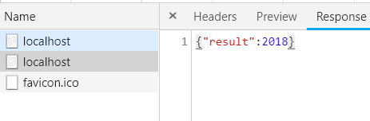

之前曾经见过跨域问题的解决方式，一个是CORS，一个是JSONP，但是就是处于知其然，不知其所以然的阶段，因此在这里借助网上资料和Node.js来分析和解决如上问题
CORS
除去一些常用标签的src，image以及link等属性是可以进行跨域的，一般的其他请求尤其是json请求是不能进行跨域的，否则会出现问题，按照如下方式初始化node.js代码，进行跨域测试：
- Server.js
1 | const http = require('http') |
- Server2.js
1 | const http = require('http') |
在Server2.js中无论请求如何都会返回一个html页面，该页面主要包含如下请求代码
- html中的js
1 | var xhr = new XMLHttpRequest(); |
向服务器2进行Http请求控制台信息如图所示

可见，其提示No Access-Control-Allow-Origin ,表示没有Access-Control-Allow-Origin头部信息，无法访问资源
我们修改服务器添加头信息为Access-Control-Allow-Origin:*在Server1中添加如下代码：
1 | response.writeHead(200,{ |
之后就不会报错了，打开控制台的NetWork栏，可以查看到”HelloWorld”字符串
JSONP
由于浏览器允许如文章开始描述的在标签内部访问，所以就可以实现跨域，这也是JSONP的原理，而只要服务器返回的信息满足json这样可以被js原生支持，客户端就会很容易的去处理，在这里我们模拟一种JSONP的方式返回信息
修改Server1的代码为：
1 | response.end('{"result":2018}') |
查看浏览器NetWork，发现返回成功

CORS跨域的限制
不是只要设置了Access-Control-Allow-Origin头部就可以随意跨域了
- 允许方法
- GET
- HEAD
- POST
- 允许的Content-Type
- text/plain
- multipart/form-data
- application/x-www-form-urlencoded
- 请求头。。
预请求
之上描述了CORS种种限制，如果想要使用自定义头或者其他Method，浏览器采用了预请求的方式，先发送一个Method=OPTION的请求，根据返回的头信息来判断请求是否合法，而服务器返回如下字段来判断1
2
3
4'Access-Control-Allow-Origin':'*',
'Access-Control-Allow-Headers':'X-Test-Cors',
'Access-Control-Allow-Method':'POST,PUT,DElete',
'Access-Control-Max-Age':'1000'//代表1000s之内不用发送预请求